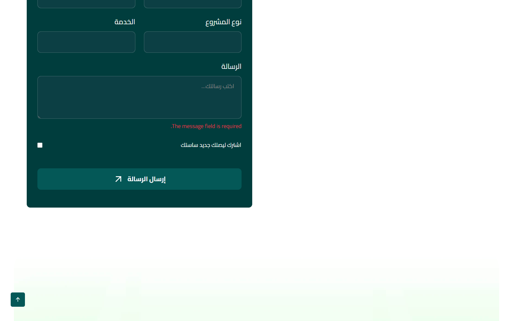
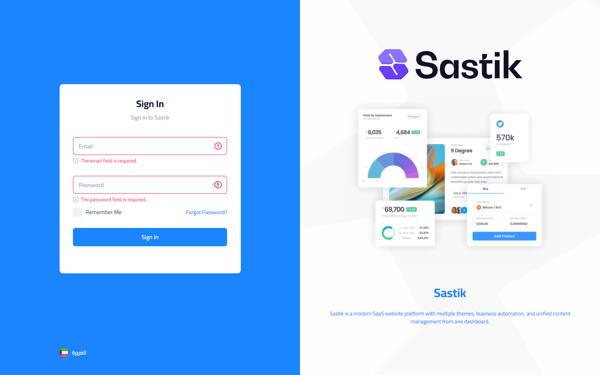
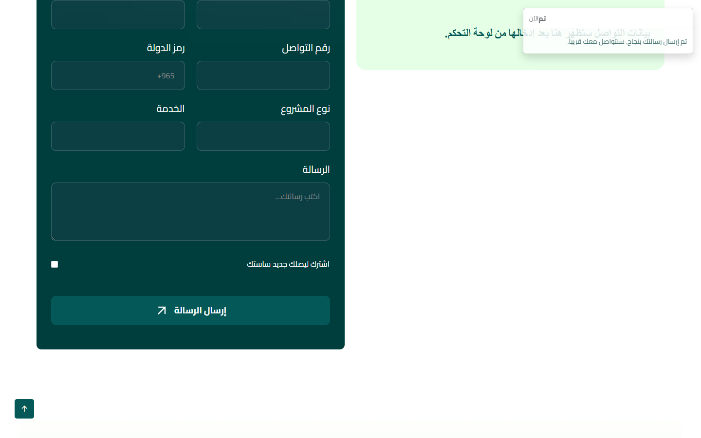
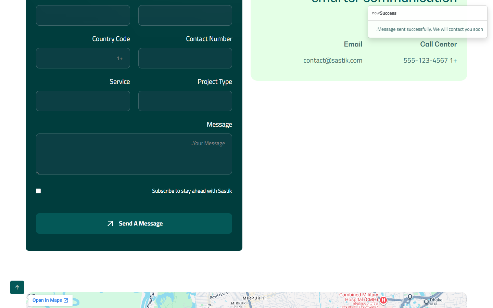

تقرير مراجعة موقع Sastik
تقرير مبسّط لغير المتخصصين: هل الصفحات والأزرار والنماذج تعمل؟ وهل توجد مشاكل ظاهرة في الشكل؟
تاريخ التقرير: الأحد، ١٦ أغسطس ٢٠٢٦ · مراجعة شاملة + تجارب النماذج (غلط/صح) + أخبار بمؤلفين مختلفين · البيئة المحلية: 127.0.0.1:8000
الخلاصة بكلمات بسيطة
أُعيد فحص الموقع ولوحة التحكم في ١٦ أغسطس ٢٠٢٦ كأن زائر عادي: فتحنا الصفحات بالعربي والإنجليزي، بدّلنا اللغة، أرسلنا رسالة تواصل، فتحنا مقالاً ووظيفة ودراسة حالة، ثم دخلنا لوحة التحكم وتجوّلنا في كل الأقسام.
النتيجة: التصفح يعمل. القائمة والفوتر والصفحات القانونية تفتح. نموذج التواصل يحفظ الرسالة. ولوحة التحكم بـ 39 قسماً فتحت بدون صفحة خطأ.
- الثيم الحالي المعروض للزائر هو مكتب المساعدة (Help Desk)، بالاتجاهين.
- نسيت كلمة المرور في دخول اللوحة لم تعد رابطاً شكلياً: فيه صفحة حقيقية ترسل رابط إعادة التعيين.
- حتى يصل الإيميل لصندوق الوارد، لازم تتعبّى بيانات SMTP من الإعدادات ← البريد (الحقول حالياً فارغة ما عدا المنفذ واسم المرسل).
- النماذج جُرّبت مرتين: بيانات ناقصة/غلط تُرفض، وبيانات صحيحة تُحفظ.
- أُضيف 9 مستخدمين (مدير عام، مدير، كتّاب، حساب معطّل، حساب غير مفعّل) و10 أخبار بـ 4 مؤلفين مختلفين.
- اختبار ضغط محلي: 2350 طلب. حتى 60 زائر متزامن الصفحات ترجع 200، لكن الاستجابة تتباطأ. عند 120 اتصال دفعة واحدة السيرفر المحلي يبدأ يفوّت طلبات (timeout).
نتائج الاختبارات
كل صف = محاولة من الواجهة الحقيقية (ضغط أزرار وإدخال بيانات)، مع اختبار برمجي إضافي للنفس السلوك.
| النموذج | محاولة غلط | محاولة صحيحة |
|---|---|---|
| تواصل معنا | فارغ وبريد غير صالح → رسالة خطأ ظاهرة | الاسم + بريد صحيح + رسالة → تم الإرسال |
| التقديم على وظيفة | إرسال فارغ → الحقول المطلوبة تُرفض | بيانات + ملف سيرة → الطلب وصل |
| نشرة البريد | بريد غير صالح يُرفض (اختبار برمجي) | بريد صحيح يُحفظ |
| دخول اللوحة | فارغ / إيميل غير موجود / كلمة غلط / حساب معطّل → يُرفض | super_admin@refineders.com / password → دخل اللوحة |
| نسيت كلمة المرور | فارغ / بريد غلط / إيميل غير موجود → يُرفض | إيميل موجود لكن SMTP فارغ → لا يُرسل للوارد |
| إضافة مستخدم من اللوحة | الحقول الفارغة وكلمة قصيرة تُرفض (اختبار برمجي) | مستخدم صحيح يُنشأ (اختبار برمجي). من المتصفح الآلي الربط مع المودال كان غير ثابت |
| إضافة خبر من اللوحة | عنوان عربي/إنجليزي فارغ يُرفض (اختبار برمجي) | الأخبار أُنشئت عبر البيانات الأولية بمؤلفين مختلفين |



ملاحظة شكل: رسالة التحقق في نموذج التواصل العربي ظهرت بالإنجليزية (.The message field is required). لا توقف الاستخدام، لكنها مزيج لغات.
اختبار الضغط (أعداد كبيرة)
ضُغط الموقع المحلي 127.0.0.1:8000 بآلاف الطلبات المتزامنة على الصفحات العامة (رئيسية، مدونة، تواصل، وظائف، من نحن، فريق، قانونية، دخول اللوحة) بالعربي والإنجليزي.
سيرفر التطوير php artisan serve يعالج طلباً واحداً في اللحظة؛ الإنتاج بـ Nginx/PHP-FPM يختلف.
| الموجة | الطلبات | متزامن | نجاح | فشل | السرعة | زمن 95٪ |
|---|---|---|---|---|---|---|
| إحماء | 200 | 20 | 200 | 0 | 3.8 طلب/ث | 5.8 ث |
| ضغط متوسط | 1200 | 50 | 1200 | 0 | 3.6 طلب/ث | 15.7 ث |
| ضغط ثقيل | 400 | 60 | 400 | 0 | 3.9 طلب/ث | 16.0 ث |
| دفعة مفاجئة | 400 | 120 | 95 | 305 مهلة | 4.7 طلب/ث | 25 ث (قطع) |
| عاصفة نقرات (30 زائر × 5 صفحات) | 150 | 15 | 144 | 6 مهلة | 2.3 طلب/ث | 24.6 ث |
305 مهلة في الدفعة المفاجئة ليست عطل كود
المهلة تعني أن السيرفر المحلي ما ردّش خلال 25 ثانية لأن php artisan serve يعالج طلباً واحداً في اللحظة والباقي يصطف.
الـ 95 طلب اللي لحقت اكتملت رجعت 200. الموقع ما طلعش خطأ 500.
على استضافة حقيقية (Nginx/PHP-FPM بعدة عمليات) نفس الـ 120 زائر لا يعملوا الطابور ده. الموقع التعريفي لا يحتاج مشروع تحسين كبير الآن. بعد الرفع على السيرفر الحقيقي تُعاد تجربة سريعة، ويُضاف كاش فقط لو ظهر بطء فعلي هناك.
المستخدمون والأخبار
أُنشئ 9 حسابات بكلمة المرور password لاختبار الأدوار والحالات:
- مدير عام: super_admin@refineders.com
- مدير: admin@refineders.com (منى)
- كتّاب أخبار: Nora Writer، Karim Editor، Layla Hassan
- مستخدمان إضافيان: Omar QA، Sara Ali
- حساب معطّل: inactive.user@refineders.com — الدخول يُرفض
- حساب غير مفعّل البريد: unverified.user@refineders.com
قائمة المستخدمين في اللوحة تعرض حسابات دور «مستخدم» (7 صفوف). المديرون يظهرون في شاشة المدراء.

أُضيفت 10 مقالات/أخبار على /en/blog و/ar/blog، منها 4 أخبار جديدة في تصنيف News، بمؤلفين مختلفين:
- Nora Writer — نمو المنتج + خبر أغسطس 2026
- Karim Editor — الاحتفاظ + خبر الدعم ثنائي اللغة
- Layla Hassan — الأتمتة + قصص مكتب المساعدة
- Mona Admin / Super Admin — التسعير والإعداد


مشاكل الواجهة
ما تم إصلاحه في هذه الدورة
نسيت كلمة المرور في لوحة التحكم
الرابط كان شكلياً ولا يفتح شيئاً. أصبح يفتح صفحة إدخال البريد، ويرسل رابط إعادة التعيين، وصفحة لتعيين كلمة مرور جديدة. الإرسال يستخدم إعدادات البريد المحفوظة في اللوحة (وليس ملف السيرفر فقط).

ربط البريد بإعدادات اللوحة بشكل صحيح
إعدادات SMTP في لوحة التحكم ← الإعدادات ← البريد أصبحت هي المصدر المعتمد للإرسال (مع تصحيح التشفير SSL لمنفذ 465). إذا كانت الحقول فارغة، النظام لا يحاول الإرسال عبر سيرفر وهمي.

توجيه خاطئ بعد الدخول لحساب «شريك»
كان الدخول بهذا الدور يوجّه لصفحة غير موجودة. أصبح يفتح الصفحة الرئيسية للوحة.
اختلاف بريد حساب المدير في بيانات الإنشاء الأولى
كان الإنشاء يخلط بين صيغتين للبريد. وُحّدت الصيغة حتى لا يحدث لبس عند تسليم بيانات الدخول.
المحتوى العربي في الصفحات الداخلية
عناوين «من نحن» و«اتصل بنا» وحقول نموذج التواصل أصبحت مترجمة. الزائر العربي يرى النصوص بالعربية بدل مزيج اللغتين.

إخفاء بيانات التواصل التجريبية
أرقام 555 وإيميل example.com وخريطة دكا لم تعد تظهر للزائر. إذا كانت بيانات التواصل فارغة في اللوحة، يظهر رابط «تواصل معنا» بدل أرقام وهمية. أدخل الهاتف والإيميل والعنوان الحقيقي من الإعدادات ← التواصل عند التوفر.

محتوى الوظائف أصبح متطابقاً
وصف كل وظيفة يطابق مسماها، والمكان Remote، والنوع دوام كامل. نموذج التقديم موجود ويعمل.

الملاحظات المتبقية
بيانات خادم البريد غير مكتملة
صفحة نسيت كلمة المرور تعمل، لكن خادم البريد واسم المستخدم وكلمة المرور وعنوان المرسل ما زالت فارغة في اللوحة. بدون تعبئتها، الرسالة لن تصل لصندوق الوارد الحقيقي. املأها من الإعدادات ← البريد، احفظ، ثم جرّب إرسال رابط لنفسك.
لا توجد بوابة دفع مربوطة
قسم الباقات للعرض. أزرار التجربة/البدء توجّه للتواصل وليس لخطوة دفع. هذا مناسب لموقع تعريفي، وإذا كانت الخطة بيع اشتراكات من الموقع لاحقاً فذلك مشروع منفصل.
لقطات من الموقع
اضغط على أي صورة لعرضها بحجم أكبر.






ملخص أقسام الموقع
| القسم | الحالة | ناجح | تنبيه | فشل |
|---|---|---|---|---|
| الرئيسية (عربي + إنجليزي) | سليم | 2 | 0 | 0 |
| تبديل اللغة | سليم | 1 | 0 | 0 |
| الفريق | سليم | 2 | 0 | 0 |
| من نحن | سليم | 2 | 0 | 0 |
| الوظائف وتفاصيلها | سليم | 3 | 0 | 0 |
| المدونة وتفاصيل المقال | سليم | 3 | 0 | 0 |
| دراسة الحالة | سليم | 1 | 0 | 0 |
| اتصل بنا (النموذج يحفظ) | سليم | 3 | 0 | 0 |
| سياسة الخصوصية وشروط الخدمة | سليم | 4 | 0 | 0 |
| صفحة غير موجودة (404) | سليم | 3 | 0 | 0 |
| الفوتر | سليم | 1 | 0 | 0 |
| الباقات (عرض فقط) | تنبيه | 1 | 1 | 0 |
ملخص لوحة التحكم
تم فتح كل روابط القائمة الجانبية بعد تسجيل الدخول. لا توجد صفحة أعطت خطأ خادم.
| القسم | الحالة | ناجح | تنبيه | فشل |
|---|---|---|---|---|
| تسجيل الدخول | سليم | 1 | 0 | 0 |
| نسيت كلمة المرور + إعادة التعيين | تنبيه | 3 | 1 | 0 |
| الرئيسية والتحليلات والملف الشخصي | سليم | 3 | 0 | 0 |
| المستخدمون والمديرون والأدوار والصلاحيات | سليم | 4 | 0 | 0 |
| محتوى الموقع (فريق، وظائف، مدونة، قانونية…) | سليم | 24 | 0 | 0 |
| الإعدادات (عام + بريد) | تنبيه | 2 | 1 | 0 |
| النشرة والنسخ الاحتياطي وعناوين IP | سليم | 3 | 0 | 0 |
ماذا يعني هذا لصاحب المشروع؟
سليم: الصفحة أو الزر يشتغل بشكل طبيعي، وما في شيء يمنع استخدامه.
تنبيه: الموقع يشتغل، لكن فيه نقطة تحتاج قرار أو محتوى أو إعداد قبل الإطلاق الرسمي.
خطأ: وظيفة مهمة لا تعمل الآن. لا يوجد حالياً بند مصنّف كخطأ.
التوصية قبل الإطلاق
الموقع جاهز للمعاينة والاستخدام الداخلي. قبل الإطلاق الرسمي بالترتيب:
- تعبئة بيانات SMTP من الإعدادات ← البريد وتجربة نسيت كلمة المرور على إيميل حقيقي.
- إدخال هاتف وإيميل وعنوان حقيقيين من الإعدادات ← التواصل عند التوفر.
- مراجعة الصفحات القانونية مع مختص إن لزم.